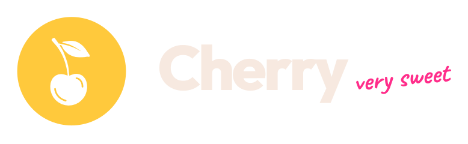

01 · Editor Pro
Edita tu reel sola
Subes los clips tal cual salen del celular y Cherry deja solo las tomas buenas. Corta las pausas, que es donde la gente desliza, y le pone color y sonido.

Abre muy pronto
Y es apenas una de las cosas que hace sola. En nuestro canal de WhatsApp te mostramos todo lo que hace por dentro y te avisamos primero el día que abra.
Abajo te explicamos cómo, en tres toques.
Por llegar hasta aquí eres de los primeros en probarla. Tienes créditos de regalo para usar Cherry gratis desde el día que abra, y ayudarnos a mejorarla con lo que nos cuentes.
Subes los clips tal cual salen del celular y Cherry deja solo las tomas buenas. Corta las pausas, que es donde la gente desliza, y le pone color y sonido.
Los subtítulos caen justo cuando dices cada palabra. En el momento clave entra un zoom con su sonido, y los gráficos aparecen solos.
Escoges el día y la hora, y Cherry lo sube a Instagram. No tienes que estar ahí.
Lee las estadísticas de cada video y te dice qué mantener y qué cambiar en el próximo, paso a paso, para que cada video retenga más que el anterior.